01 / HoodieMidnight
Midnight
Monogram
Heavyweight black hoodie, restrained front monogram, oversized stacked wordmark across the back.
Concept onlyConcept collection / 001
A speculative merch universe built from Darla Quinn's wordmark, monogram, signature, and the quiet emotional language of the songs.


Heavyweight black hoodie, restrained front monogram, oversized stacked wordmark across the back.
Concept onlySoft ivory tee with the handwritten signature floating low across the chest in muted gold.
Concept onlyDeep wine fleece with the DQ monogram centered like a seal, finished with tiny gold lyric-detail typography.
Concept onlyThree collectible picks exploring the monogram, signature and minimal DQ mark as tiny keepsakes for players and fans.
Concept onlyBlack oversized tee, clean stacked identity on front, designed to later carry dates, venues or lyric fragments on the reverse.
Concept onlySmall objects, same world
Heavy uncoated stock, tiny type, one line per card.
Minimal monogram front, signature detail on the reverse.
Small embroidered DQ mark, tonal and understated.
Muted-gold metal tins holding branded player sets.